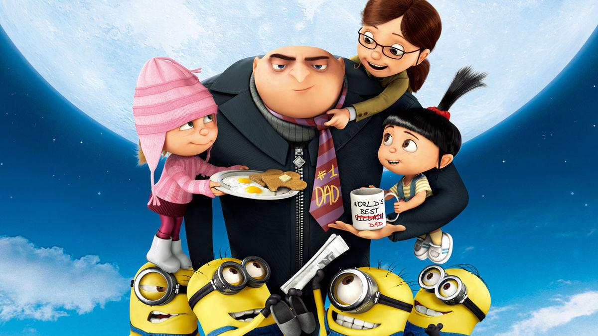

Gru, family, and minions.
THE HISTORY OF MINIONS
One day, the Minions accidentally activated a time machine in their underground lab,
sending Kevin, Stuart, and Bob into a future ruled by a tyrannical robot named Xortron.
Teaming up with a young inventor named Luna, they embarked on a hilarious adventure to
steal an energy crystal needed to fix the timeline. With their usual mix of chaos and
cleverness—plus a well-timed banana distraction—they escaped Xortron's fortress and
returned to the present. Back in their lab, the Minions celebrated, ready for their next
mischievous adventure.
Timeline
Prehistoric Era:
Minions serve their first master, a T. rex, but accidentally
cause the extinction of dinosaurs.Ancient Civilizations:
They assist infamous rulers like Egyptian pharaohs and
Napoleon, but always unintentionally lead to their downfall.19th to Early 20th Century:
After a series of failures, they go into hiding in an icy cave, living in isolation and losing purpose.1960s:
The Minions reemerge, searching for a new villain and eventually meet young Gru, whom they pledge to serve.1970s:
They aid Gru in his early villainous adventures, often causing chaos but helping him rise in notoriety.Present Day:
The Minions remain loyal to Gru, now a reformed villain, continuing to assist him in various missions while causing humorous mishaps.
| Name |
Characteristic |
Favorite Activity |
| Kevin |
Tall
two eyes
leader |
Saving the day |
| Stuart |
One eye
laid-back |
Playing guitar |
| Bob |
Short
two eyes
childlike
|
Cuddling his teddy bear |
| Dave |
Two eyes
fun-loving |
Playing video games |
Amount of Gas based on Banana intake for Minion and Potentially Fly
F = B × X × 1/E;
B= numbers of bananas eaten
F = the total fart gas produced in liters.
G = gas required to reach the moon, set at 1,000 liters.
X = average gas produced per banana.
E = an efficiency factor based on the Minion's weight.
Let 30kg be the average weight
X varies based on the type of banana:
Regular banana: 10 liters
Ripe banana: 15 liters
Overripe banana: 20 liters